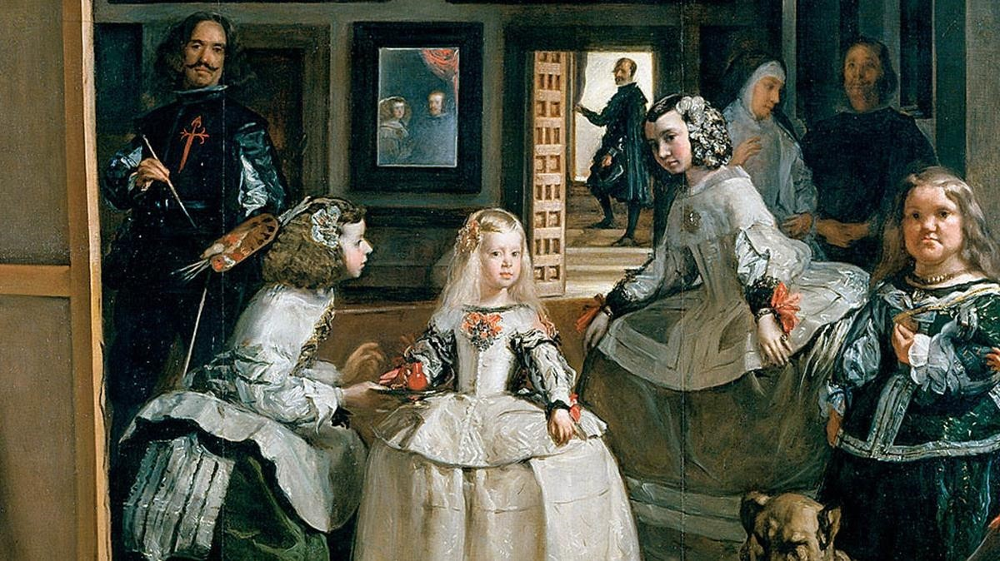

<!--
  Generated template for the RetoHitosPage page.

  See http://ionicframework.com/docs/components/#navigation for more info on
  Ionic pages and navigation.
-->


<ion-content>
    <ion-card *ngFor="let item of items" (click)="itemTapped($event, item)" style="display: grid;">
        
        <ion-card-content>
          <ion-card-title>
            {{item.title}} --  Menina Angel  
    
            </ion-card-title>
          <p>
            {{item.note}} --  Direccion. icono chulesco -- <ion-icon name="{{item.icon}}" item-left></ion-icon>
          </p>
          <ion-row no-padding>
              <!-- <ion-col>
                <button ion-button clear small color="color-reto-camino" icon-start>
                  <ion-icon name="heart-outline"></ion-icon>
                  Favorito
                </button>
              </ion-col> -->
              <ion-col text-center>
                <button ion-button clear small color="color-reto-camino" icon-start>
                  <ion-icon name="map"></ion-icon>
                  Mapa
                </button>
              </ion-col>
              <!-- <ion-col text-right>
                <button ion-button clear small color="color-reto-camino" icon-start>
                  <ion-icon name="md-share"></ion-icon>
                  Compartir
                </button>
              </ion-col> -->
            </ion-row>
        </ion-card-content>
      </ion-card>
</ion-content>
